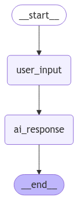

🧠 Tema 4: Memoria
🕵 ¿Qué es el la Memoria?
La memoria es la capacidad que tiene el grafo para recordar información a lo largo de múltiples invocaciones. Es especialmente útil cuando creamos chatbots o flujos conversacionales donde el contexto es crucial.
- Sin memoria: Cada vez que invocamos el grafo, comienza desde cero.
- Con memoria: El grafo guarda un historial de mensajes o datos, permitiendo respuestas basadas en todo el contexto anterior.
¿Por qué es importante?
- Persistencia de datos.
- Toma de decisiones basadas en el contexto actual.
- Mayor precisión en interacciones prolongadas.
🛠️ ¿Cómo Funciona?
LangGraph ofrece varios tipos de memoria:
-
Memoria de Estado (State Memory):
- El estado se transfiere de nodo a nodo, reteniendo información solo durante una invocación.
-
Memoria de Corto Alcance (MemorySaver):
- Guarda datos durante múltiples invocaciones, pero no persiste después de cerrar el programa.
- Almacena la información en memoria volátil (RAM).
- Ideal para flujos temporales que necesitan recordar el contexto durante la sesión actual.
👉 Documentación de MemorySaver
-
Memoria Persistente (Postgres u otros):
- Permite almacenar el historial en bases de datos externas (ej: PostgreSQL).
- Se verá en temas más avanzados.
-
Memoria Transversal (Cross-Session Memory):
- Conserva datos a lo largo de múltiples sesiones y usuarios.
- Se estudiará en profundidad en futuros módulos.
🧩 Implementación de MemorySaver
Usando el ejemplo que vimos anteriormente en artículos pasados, vamos a definir un grafo sencillo para poder ver como actula el MemorySaver:
- CustomState: Definimos un custom state para almacenar los mensajes.
- Nodo de entrada del usuario: Agrega el mensaje del usuario al estado.
- Nodo de respuesta de IA: El modelo de OpenAI (
gpt-4o-mini) genera una respuesta basada en el historial.
from langchain_openai import ChatOpenAI
from langchain_core.messages import HumanMessage, AIMessage, SystemMessage
from langgraph.graph import MessagesState
llm = ChatOpenAI(model="gpt-4o-mini")
class CustomState(MessagesState):
messages: list[AIMessage | HumanMessage | SystemMessage] = []
# Nodo de entrada del usuario
def user_input_node(state: CustomState):
print("--- Usuario dice ---")
print(state['messages'][-1].content)
return {"messages": state['messages']}
# Nodo de IA (respuesta)
def ai_response_node(state: CustomState):
print("--- IA responde ---")
response = llm.invoke(state['messages'])
print(response.content)
return {"messages": state['messages'] + [AIMessage(content=response.content)]}
user_input_node:Toma el mensaje del usuario y lo guarda en el estado.ai_response_node:Usa el estado actual (historial) para generar una respuesta de IA.
🏗️ Añadiendo Memoria al Grafo
Ahora implementaremos el MemorySaver para agregar memoria de corto alcance a nuestro grafo.
📋 Grafo sin Memoria
En el siguiente ejemplo, vamos a ver un grafo básico, como ya hemos visto hasta ahora, solamente para poder ver la diferencia para cuando le apliquemos nuestra memoria.
from langgraph.graph import StateGraph, START, END
builder = StateGraph(State)
builder.add_node("user_input", user_input_node)
builder.add_node("ai_response", ai_response_node)
builder.add_edge(START, "user_input")
builder.add_edge("user_input", "ai_response")
builder.add_edge("ai_response", END)
graph_no_memory = builder.compile()
📋 Grafo con Memoria
Ahora, agregaremos una memoria temporal y comprobaremos si nuestro grafo es capaz de retener información para poderla usar mas adelante.
from langgraph.graph import StateGraph, START, END
from langgraph.checkpoint.memory import MemorySaver
memory = MemorySaver()
builder_mem = StateGraph(State)
builder_mem.add_node("user_input", user_input_node)
builder_mem.add_node("ai_response", ai_response_node)
builder_mem.add_edge(START, "user_input")
builder_mem.add_edge("user_input", "ai_response")
builder_mem.add_edge("ai_response", END)
graph_memory = builder_mem.compile(checkpointer=memory)
📈 Visualización del Grafo
Para observar cómo se estructura nuestro grafo, generamos una visualización:
from IPython.display import Image, display
display(Image(graph_no_memory.get_graph().draw_mermaid_png()))
display(Image(graph_memory.get_graph().draw_mermaid_png()))

🚀 Invocando el Grafo y Comparando Resultados
📋 Sin Memoria
graph_no_memory.invoke({"messages": [HumanMessage(content="Hola, me llamo Raul.")]})
graph_no_memory.invoke({"messages": [HumanMessage(content="¿Cómo me llamo?")]})
--- Usuario dice ---
Hola, me llamo Raul.
--- IA responde ---
¡Hola, Raúl! ¿Cómo estás? ¿En qué puedo ayudarte hoy?
--- Usuario dice ---
¿Cómo me llamo?
--- IA responde ---
No tengo acceso a información personal sobre los usuarios, así que no sé cómo te llamas. Pero si quieres, puedes decirme tu nombre. ¡Estoy aquí para ayudarte!
Como vemos el grafo no guarda el histórico del chat, haciendo que el LLM no pueda tener acceso a información previa, por eso no es capaz de recordar mi nombre.
📋 Con Memoria
config = {"configurable": {"thread_id": "1"}}
# Agregamos el config a nuestros invokes
graph_memory.invoke({"messages": [HumanMessage(content="Hola, me llamo Raul.")]},config)
graph_memory.invoke({"messages": [HumanMessage(content="¿Cómo me llamo?")]},config)
--- Usuario dice ---
Hola, me llamo Raul.
--- IA responde ---
¡Hola, Raúl! ¿Cómo estás? ¿En qué puedo ayudarte hoy?
--- Usuario dice ---
¿Cómo me llamo?
--- IA responde ---
Te llamas Raúl. ¿Hay algo más en lo que te pueda ayudar?
El parámetro config es fundamental para habilitar el seguimiento de sesiones individuales cuando utilizamos memoria con MemorySaver.
- thread_id actúa como un identificador único para cada sesión o conversación.
- Esto permite que LangGraph recuerde información específica de una sesión y la distinga de otras conversaciones paralelas.
🧩 ¿Qué sucede sin thread_id?
Si no agregamos thread_id:
- Cada invocación del grafo se trata como una nueva sesión, incluso si estamos usando MemorySaver.
- El grafo no podrá recordar mensajes previos porque no tendrá forma de asociarlos a una misma sesión.
🚀 ¿Cuándo usar thread_id?
- Chats personalizados: Cuando manejamos múltiples usuarios o conversaciones.
- Bots conversacionales: Para mantener el contexto de usuarios durante largas interacciones.
- Flujos multi-sesión: Si queremos permitir que un usuario retome una conversación anterior.
🧩 Alternativa a MemorySaver
La forma más efectiva de aplicar memoria de corto alcance en LangGraph es utilizando MemorySaver. Sin embargo, existen otras alternativas que pueden resultar útiles en ciertos casos.
Una de las opciones más simples es almacenar el historial de la conversación en una variable y pasarla continuamente durante cada invocación. De esta manera, el modelo de lenguaje (LLM) mantiene el contexto de la conversación sin depender de sistemas de memoria externos.
A continuación, veremos un ejemplo sencillo para entender cómo implementar esta técnica:
# Almacenamos las preguntas y respuestas en una variable.
messages = [HumanMessage(content="Hola, me llamo Raul.")]
response = graph_no_memory.invoke({"messages": messages})
messages.append(response.get('messages')[-1])
messages.append(HumanMessage(content="¿Cómo me llamo?"))
response = graph_no_memory.invoke({"messages": messages})
messages.append(response.get('messages')[-1])
--- Usuario dice ---
Hola, me llamo Raul.
--- IA responde ---
¡Hola, Raúl! ¿Cómo estás? ¿En qué puedo ayudarte hoy?
--- Usuario dice ---
¿Cómo me llamo?
--- IA responde ---
Te llamas Raúl. ¿Hay algo más con lo que te pueda ayudar?
- Guardamos los mensajes en una lista (
messages) que actúa como historial de conversación. - Tras cada invocación al grafo, agregamos la respuesta generada por la IA al historial.
- Cuando el usuario realiza una nueva pregunta, enviamos el historial completo al grafo para que el modelo mantenga el contexto.
🧑🏫 Observaciones Importantes
- Esta técnica proporciona memoria temporal, pero requiere gestión manual del historial de mensajes.
- El historial puede almacenarse:
- En una variable.
- En una base de datos.
- En un archivo externo.
Aunque más adelante exploraremos métodos más avanzados y optimizados (como memoria persistente con bases de datos), esta solución puede ser una forma sencilla y efectiva para proyectos que no requieren una arquitectura compleja.
🔎 Recursos:
- Ver notebook en Google Colab
 How-to-guide: MemorySaver
How-to-guide: MemorySaver
🧑🏫 ¿Qué Hemos Aprendido?
- Memoria de Estado (State): Solo persiste durante la ejecución de una invocación.
- MemorySaver: Proporciona memoria de corto alcance para retener datos durante múltiples invocaciones.
- Diferencias Clave: Sin memoria, cada invocación es independiente. Con memoria, el grafo recuerda datos anteriores.
🌐 ¿Qué es lo Siguiente?
En el siguiente tema exploraremos Chains y Flujos de Trabajo, donde aprenderemos a encadenar nodos y construir pipelines complejos.
También abordaremos el tema de Tools (Herramientas), pero lo veremos después de Chains, ya que comprender primero el flujo de trabajo hará que la integración de herramientas sea más sencilla y práctica.